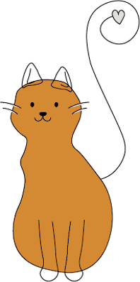

Over ons
Welkom bij Cats Ahoy. De poezenboot is een dierenasiel voor katten gelocaliseerd in Amsterdam op een woonboot aan de Singel. Hier kunnen katten waar niet meer voor gezorgd kan worden en zwerfkatten worden heengebracht voor onderkomen in afwachting op een nieuw baasje
Geschiedenis
In 1968 werd de Poezenboot genaamd de Tjalk geopend door mevrouw Van Weelde. Door ruimtegebrek werd in 1971 enige tijd een tweede boot in bedrijf genomen. In 1979 werd een nieuwe boot de Ark gebouwd speciaal voor de opvang van katten. De Stichting de Poezenboot werd opgericht op 3 juni 1987.